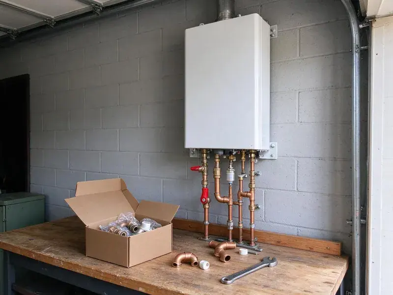

Water Softener Installation in Waterloo, IA
Enjoy the benefits of soft water throughout your Waterloo, IA home. KFR Plumbing focuses on professional water softener installation, tailored to your needs.
- Prompt, Dependable Service
- Guaranteed Satisfaction
- Licensed Plumbers
- Quality Brands

Schedule Your Water Softener Installation in Waterloo, IA.
We size each system to your water hardness and family size.
Water Softener Installation and Hard Water Solutions in Waterloo, IA
KFR Plumbing specializes in professional water softener installation, helping homeowners in Waterloo, IA deal with the challenges of hard water. Our certified plumbers assess your home's particular needs and recommend the right system to improve water quality.
Our expertise includes:
- Salt-based softeners with Fleck and Clack control valves
- Ensuring compliance with local plumbing codes
- Precise plumbing for optimal system integration

Additional Plumbing Installation Services in Waterloo, IA
We install water heaters, pumps, lines, and fixtures across Waterloo, IA with precision workmanship that meets every local code.


Customers
Why Choose KFR Plumbing for Water Softener Installation in Waterloo, IA?
Hard water shortens the life of water heaters, dishwashers and faucets and leaves scale on shower glass. A properly sized softener protects your plumbing and cuts down on cleaning and repairs.
- Clean Installation, We use quality fittings and include a bypass valve for easy service.
- Energy Efficiency, Water heaters operate more economically without mineral scale, saving on energy bills.
- Proper Sizing, We size by grain capacity, household size and daily water use.
Citywide Coverage
We install water softeners in homes and condos throughout Waterloo. Many newer homes have a pre-plumbed softener loop, which makes installation quicker.
Experienced Team
Our plumbers install softeners, conditioners and filtration systems regularly. They know how to program control valves and set regeneration schedules for efficiency.
Safety-First Approach
Safety and code compliance are paramount in all our water softener installations. We closely follow all local Waterloo, IA plumbing codes and industry standards, providing a safe and legally compliant setup for your home.
Trusted Certified Waterloo Plumbing Services Professionals
At KFR Plumbing, we take pride in providing licensed, certified plumbing services throughout Waterloo, IA. Backed by leading industry credentials, our experienced plumbers combine technical skill with genuine customer care. Whether it is repair, installation, or maintenance, we follow strict safety and quality standards to deliver long-lasting results you can trust.
Call Us Now PHCC Plumbing Contractor Recognition
PHCC Plumbing Contractor Recognition Better Business Bureau (BBB) Accreditation
Better Business Bureau (BBB) Accreditation Angi Certified Pro
Angi Certified Pro ISO 9001 Quality Management Certification
ISO 9001 Quality Management CertificationReliable Water Softener Installation Services in Waterloo, IA
Reverse Osmosis Drinking Water Systems in Waterloo
Reverse osmosis systems remove dissolved solids, which can be high in some water supplies. We install RO units under the kitchen sink with a dedicated faucet. Some systems also connect to refrigerators or ice makers. RO pairs well with a softener for complete water treatment. We change filters on a schedule so the system keeps working well.

Culligan Water Softener Installation in Waterloo
We are experienced in installing a wide range of water softener brands, including popular models from Culligan. Culligan systems are known for their reliability and performance. Our technicians are familiar with the installation requirements for various Culligan models, making sure your new system is set up correctly for optimal hard water treatment in your Waterloo residence. We handle all connections and programming.
Ecodyne Water Softener Installation in Waterloo
We also install Ecodyne water softeners, which are designed for solid performance and ease of use. These systems often come with user-friendly features and provide consistent soft water results. Our plumbers are familiar with Ecodyne specifications, delivering a correct and efficient installation for your Waterloo home.
Whole-House Water Softener Systems in Waterloo
A whole-house water softener system is installed directly on your main water line, treating all the water entering your Waterloo home. This ensures every faucet, shower and appliance receives soft water. Our installation process involves carefully integrating the system into your existing plumbing, including necessary bypass valves and pressure regulators, to provide comprehensive protection against hard water throughout your property.
Combination Softener and Carbon Filter Systems in Waterloo, IA
Municipal water often contains chlorine or chloramine that affects taste and smell. A carbon filter paired with a softener removes those chemicals and protects resin. We install combination systems with filter and softener tanks or dual-stage units. This setup improves both water quality and feel. Many homeowners notice a real difference in taste.
Salt-Based Water Softener Systems in Waterloo, IA
Salt-based water softeners are the most common and effective type, using ion exchange to remove hard minerals like calcium and magnesium. KFR Plumbing has years of experience with the installation of these traditional systems, ensuring proper brine tank setup and regeneration cycles. We can recommend efficient models that minimize salt and water consumption for your Waterloo, IA home.
Pelican Water Softener Installation in Waterloo, IA
Pelican Water Systems offer a variety of water treatment solutions, including both salt-based softeners and salt-free conditioners. If you've chosen a Pelican system for your Waterloo, IA home, KFR Plumbing can provide professional installation. Our plumbers make sure of proper sizing, secure connections and correct startup procedures to get the most from the effectiveness and lifespan of your Pelican water softener or conditioner.

Water Softener Replacement & Upgrades in Waterloo, IA
If your old water softener is failing, inefficient or no longer meets your needs, KFR Plumbing offers professional water softener replacement and upgrade services in Waterloo, IA. We can remove your outdated unit and install a newer, more efficient model, often with modern features like smart controls or higher capacity. Upgrading can save you money on salt and water usage over time.
Water Softener Installation Near Me in Waterloo, IA
When you need professional water softener installation, you want a trusted local company. KFR Plumbing offers convenient, high-quality service, ensuring that residents in Waterloo and surrounding towns have access to the best hard water solutions. Call us for service that's truly 'near me' and focused on your community.
When you need water softener installation near me, our local plumbers can schedule quickly. We bring testing kits and common systems on our trucks. Many installs are completed in a few hours.
KFR Plumbing at a Glance
- Fully licensed plumbing team covering Waterloo, IA
- 24/7 emergency service with same-day scheduling
- Upfront, flat-rate pricing before work begins
- 4.8-star rated by 620+ Iowa customers
Waterloo Map
Waterloo Information
- Population
- 66,606
- Area codes
- 319/515/641
- Service area
- Waterloo and communities within 40 miles
- Nearby
- Cedar Falls, Marion, Cedar Rapids, Iowa City
Water softener installation is important for homes in Waterloo, IA because hard water can wear down plumbing and appliances over time, leading to reduced efficiency and costly repairs.
Expert Services
Trust our professionals for reliable KFR Plumbing solutions in Waterloo, IA.
Our Specialized Plumbing Services in Waterloo, IA
At KFR Plumbing, we provide a complete range of plumbing services across Waterloo, IA. From leak detection to full system installations, our team ensures fast, precise, and affordable service for both residential and commercial properties. Explore our core services below:


How Our Water Softener Installation Process Works in Waterloo, IA
Our water softener installation process is simple and focused on long-term results.
Request a Quote
Call (515) 308-3583 to schedule a water test and consultation. We suggest a system and provide upfront pricing.
Install the System
We connect the softener to your loop or install a new loop, add a bypass valve and set up the drain. We fill the brine tank and program the control valve.
Test and Explain
We test water hardness after installation to confirm the system is working. Then we explain salt refills, settings and maintenance.
Frequently Asked Questions About Water Softener Installation in Waterloo
The cost of water softener installation in Waterloo, IA can range from $1,500 to $4,000, depending on the type and size of the system, your home's existing plumbing and any necessary modifications. This usually includes the unit itself and the labor for professional installation. We provide written, upfront pricing after an on-site assessment.
Installing a water softener offers many benefits, including preventing scale buildup in pipes and appliances, extending appliance lifespan, reducing soap and detergent usage and improving the feel of your skin and hair. It also makes cleaning easier and keeps clothes looking brighter.
Maintenance mainly involves periodically adding salt to salt-based systems, usually every 4 to 8 weeks depending on water usage and hardness. It's also good practice to schedule annual check-ups with a professional plumber to confirm the system is operating efficiently and to address any potential issues.
Softeners remove hardness minerals using salt, while conditioners change how minerals behave to reduce scale. Softeners are more effective for very hard water.
Most standard water softener installations can be completed within 3 to 6 hours. More complex installations, or those requiring significant plumbing modifications, might take a full day. Our plumbers work efficiently to minimize disruption to your home's water supply.
We offer a warranty on our workmanship, and the water softener units themselves come with manufacturer warranties, which usually range from 5 to 10 years for the tank and control valve. We will provide you with all warranty details for your specific system after installation.
With proper maintenance, a quality water softener system can last between 10 and 15 years, and sometimes even longer. The lifespan depends on the quality of the unit, the hardness of your water and how well it is maintained. Regular servicing can help lengthen its life.
In many cases a separate permit is not required for a standard residential water softener installation. However, if the installation involves major changes to your home's main water line or drainage system, a permit might be necessary. Our team will advise you on any permit requirements for your project in Waterloo.
What People Are Saying About Our Plumbing Experts?

Mark T.
When our office needed drain cleaning, KFR Plumbing provided quick, reliable service. The plumber arrived on time and made sure every drain flowed perfectly before leaving. Very satisfied.
Drain Cleaning · Iowa City, IA
Laura S.
I scheduled a water heater replacement, and the team made the process smooth and affordable. The new unit works perfectly, and they cleaned up after completing the job.
Water Heater Replacement · Marion, IASofia M.
Two new toilets installed in one visit, no mess left behind, and the tech even adjusted a faucet he noticed was dripping. Fair pricing and really friendly.
Toilet Installation · Iowa City, IA
James P.
Our commercial plumbing system had a leak under the sink, and KFR Plumbing handled it professionally. The plumbers arrived quickly and restored everything without disruption to our customers.
Commercial Plumbing · Waterloo, IA
Emily R.
I called KFR Plumbing for plumbing repair, and the technician was fast, polite, and thorough. They explained the problem clearly and fixed it the same day. I will definitely hire them again. Highly recommended!
Plumbing Repair · Cedar Falls, IA
Daniel K.
A pipe burst at 11 pm and they actually answered. The plumber showed up within the hour, shut everything down, and had us back to normal the next morning. Could not ask for more.
Emergency Plumbing · Iowa City, IA